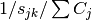

9.1. A whole zoo of Routing Problems
This section is meant to make you aware that the classification of Routing Problems is intricate[1]. Actually, there is no real and widely adopted classification[2][3].
All the Routing Problems are somewhat related to each others and to Scheduling Problems[4]. We can roughly divide Routing Problems in three broad - and often overlapping - categories:
- Node Routing Problems (NRP)
- Vehicle Routing Problems (VRP)
- Arc Routing Problems (ARP)
For each category, we give an informal definition, list some known mathematical problems, refer an authoritative source and present quickly the examples we detail in each chapter of part III.
Warning
Be aware of the complexity of the classification of Routing Problems when you search for a specific routing problem.
Most problems have variants and sometimes are known under different names. For instance, the Cumulative Travelling Salesman Problem is also known as:
- The Travelling Salesman Problem with cumulative costs
- The Travelling Repairman Problem
- The Deliveryman Problem
- The Minimum Latency Problem
- The  Scheduling Problem
- ...
| [1] | You can stop reading now if you want: this section involves neither Constraint Programming nor the or-tools library. |
| [2] | From time to time, an article is published to propose a good classification but none has been adopted by the community so far. See [Eksioglu2009] for instance. |
| [3] | Some people may actually disagree with the terms used in this manual. |
| [4] | Although Scheduling Problems and Routing Problems are not solved with the same techniques. See [Prosser2003] for instance. |
| [Eksioglu2009] | B. Eksioglu, A. Volkan Vural, A. Reisman, The vehicle routing problem: A taxonomic review, Computers & Industrial Engineering, Volume 57, Issue 4, November 2009, Pages 1472-1483. |
| [Prosser2003] | J. C. Beck, P. Prosser and E. Selensky, Vehicle Routing and Job Shop Scheduling: What’s the difference?, Proc. of the 13th International Conference on Automated Planning and Scheduling, 2003, pages 267–276. |
So what is a Routing Problem anyway?
Broadly speaking, a Routing Problem is a mathematical problem where you need to find routes in a graph (or more generally a network) respecting some visiting constraints. A route is a path connecting a starting vertex and an ending vertex (both can coincide). Visiting constraints forbid or force to visit some or all nodes, edges and arcs. Often additional constraints are required to model real problems.
Notice that what is known as the General Routing Problem in the scientific literature is a combination of NRP and ARP: You have a graph or a network and you must find one tour covering/serving some required arcs/edges/nodes for a minimum cost, i.e. you only have 1 vehicle.
We now present the three broad categories of Routing Problems. All are Optimization Problems where we try not only to find a solution but a good solution or even a best solution. Most problems minimize an objective function along the routes defined in the solution. Typically, the objective function is the sum of the weights of the edges/arcs/nodes the solution is made of and a cost for each of the vehicles when more than one is involved.
One main difference between Arc Routing Problems and Node Routing Problems is that basic ARPs (like the Chinese Postman Problem on undirected and directed graphs) are easy problems while basic NRPs (like the Metric Travelling Salesman Problem) are intractable. But add some basic constraints and/or consider mixed graphs and the ARPs too become intractable. More often than not, the size of ARPs we are able to solve are an order of magnitude smaller than the size of the corresponding NRPs we are able to solve. This can be partly explained by the fact that NRPs received (and still receive) more attention than their equivalent ARPs from the scientific community but ARP specialists tend to believe that ARPs are intrinsically more difficult than NRPs.
VRPs are often used to model real transportation problems where goods/services/people are moved from one point to another and as such must respect lots of side constraints (capacities, delivery times, etc.).
9.1.1. Node Routing Problems
9.1.1.1. Informal definition:
The term Node Routing Problem (NRP) is seldom used[5] and mainly refers to Travelling Salesman Problems (TSP)-like problems. In this manual, when we refer to NRP, we mean TSP-like problems, i.e. routing problems where nodes must be visited and served. We use it to refer to node-related Routing Problems and in contrast to arc-related Routing Problems. Most of the NRPs consider 1 vehicle of capacity, i.e. we seek one tour that covers all the required nodes.
| [5] | Node Routing Problems might even describe problems unrelated to Routing Problems in the scientific literature! |
9.1.1.2. Some problems
- The Travelling Salesman Problem
- The General Travelling Salesman Problem
- The Cumulative Travelling Salesman Problem
- The Sequential Ordering Problem
- The Hamiltonian Cycle Problem
- The Longest Path Problem
- The Steiner Tree Problem
- ...
9.1.1.3. Authoritative source:
D. L. Applegate, R. E. Bixby, V. Chvatal, and W. J. Cook. The Traveling Salesman Problem: A Computational Study, Princeton Series in Applied Mathematics, Princeton University Press, 606 pp., 2007.
9.1.1.4. The TSPTW:
The Travelling Salesman Problem with Time Windows is...
[insert epix graphic]
9.1.2. Vehicle Routing Problems
9.1.2.1. Informal definition:
Vehicle Routing Problems (VRPs) are concerned with a fleet of (maybe heterogeneous) vehicles. The number of vehicles can be fixed in advance or be a variable of the problem. Generally, a vehicle has a certain capacity (number of people, number of tons of goods, etc.) and must respect some “time”-constraints (like the total duration of a route, time windows to serve clients, etc.). Clients are usually modelled by nodes and to solve a VRP, one seeks to find several routes (1 per vehicle) that visit all clients and respect all given constraints.
9.1.2.2. Some problems
- The Vehicle Routing Problem
- The Capacitated Vehicle Routing Problem
- The Pickup and Delivery Problem
- The Vehicle Routing Problem with Time Windows
- ...
9.1.2.3. Authoritative source:
Golden, Bruce L.; Raghavan, S.; Wasil, Edward A. (Eds.). The Vehicle Routing Problem: Latest Advances and New Challenges. Springer, Series: Operations Research/Computer Science Interfaces Series, Vol. 43, 2008, 589 p.
9.1.2.4. The CVRP:
The Capacitated Vehicle Routing Problem is...
[insert epix graphic]
9.1.3. Arc Routing Problems
9.1.3.1. Informal definition:
In Arc Routing Problems, we visit and serve edges and/or arcs. Most of the problems consider 1 vehicle of capacity, i.e. we seek one tour that covers all the required edges and/or arcs.
9.1.3.2. Some problems
- The Chinese Postman Problem
- The Canadian Postman Problem
- The Windy Postman Problem
- The Hierarchical Postman Problem
- The Rural Postman Problem
- The Cumulative Chinese Postman Problem
- The Route Inspection Problem
- The Capacitated Arc Routing Problem
- ...
9.1.3.3. Authoritative source:
Dror, M. (Ed.). Arc Routing: Theory, Solutions and Applications. Kluwer Academic Publishers, Dordrecht, 2000.
9.1.3.4. The CCPP:
The Cumulative Chinese Postman Problem is ...
[insert epix graphic]
Google or-tools |
User's Manual
Google search
Welcome
Tutorial examples
Current chapter
9. Travelling Salesman Problems with constraints: the TSP with time windows
Previous section
9. Travelling Salesman Problems with constraints: the TSP with time windows
Next section
9.2. The Routing Library (RL) in a nutshell